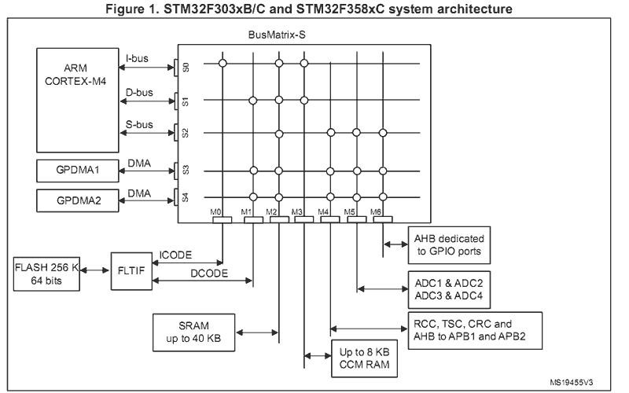
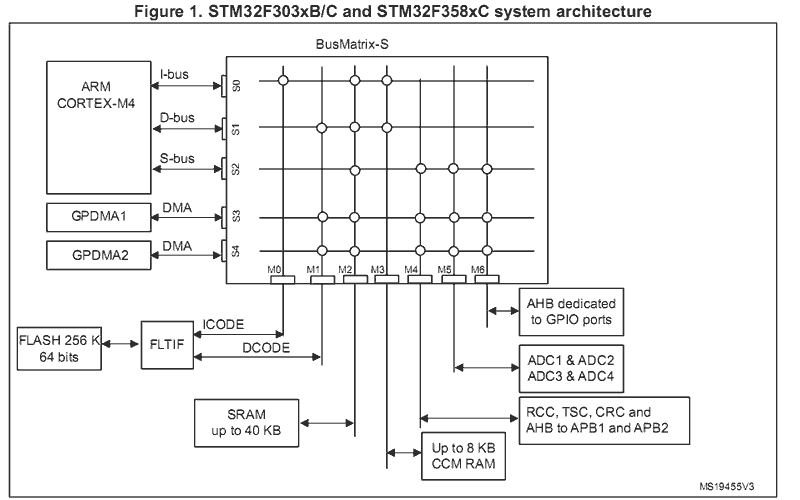

ELF Programs – No Symbol Tables
Warning
Migrated from: https://cwiki.apache.org/confluence/pages/viewpage.action?pageId=139629542
You can easily extend the firmware in your released, embedded system using ELF
programs provided via a file system (for example, an SD card or downloaded into
on-board SPI FLASH). In order to support such post-release updates, your
released firmware would have to support execution of fully linked, relocatable
ELF programs loaded into RAM (see, for example, apps/examples/elf).
The files shown in this Wiki page can be downloaded here.
Alan Carvalho de Assis has also made a video based on this example in the YouTube NuttX Channel.
Creating the Export Package
At the time that you release the firmware, you should create and save an
export package. The export package is all that you need to create
post-release, add-on modules for your embedded system. Let’s illustrate this
using the STM32F4-Discovery networking NSH configuration with the
STM32F4DIS-BB baseboard. (This demonstration assumes that you also have
support for some externally modifiable media in the board configuration, such
as removable media like an SD card, or a USB FLASH stick, an internal file
system remotely accessible via USB MSC, FTP, or any remote file system (NFS).
The networking NSH configuration uses the SD card on the STM32 baseboard
for this demonstration. Other NSH configurations could be used, provided
that you supply the necessary file system support in some fashion.)
(No baseboard? You can add file system support to the basic STM32F4-Discovery
board by following these instructions:
USB FLASH drive
or SD card.)
$ make distclean
$ tools/configure.sh -c stm32f4discovery:netnsh
$ make menuconfig
Your released firmware would have to have been built with a few important configuration settings:
Disable networking (Only because it is not needed in this example):
# CONFIG_NET is not set
Enable basic ELF binary support with no built-in symbol table support:
CONFIG_ELF=y
CONFIG_LIBC_EXECFUNCS=y
# CONFIG_EXECFUNCS_HAVE_SYMTAB is not set
Enable PATH variable support:
CONFIG_BINFMT_EXEPATH=y
CONFIG_PATH_INITIAL="/bin"
# CONFIG_DISABLE_ENVIRON not set
Enable execution of ELF files from the
NSHcommand line:
CONFIG_NSH_FILE_APPS=y
Note
You must enable some application that uses printf(). This is necessary
to assure that the symbol printf() is included in the base system.
Here we assume that you include the “Hello, World!” example from
apps/examples/hello:
CONFIG_EXAMPLES_HELLO=y
Then we can build the NuttX firmware image and the export package:
$ make
$ make export
When make export completes, you will find a ZIP’ed package in the top-level
NuttX directory called nuttx-export-x.y.zip (for version x.y). The
version is determined by the .version file in the same directory. The
content of this ZIP file is the following directory structure:
nuttx-export-x.x
|- arch/
|- build/
|- include/
|- libs/
|- startup/
|- System.map
`- .config
The Add-On Build Directory
In order to create the add-on ELF program, you will need (1) the export
package, (2) the program build Makefile, (3) a linker script used by the
Makefile, and (4) a Bash script to create a linker script. That
Makefile and Bash Script are discussed in the following paragraphs.
Note
These example files implicitly assume a GNU tool chain is used and, in at
least one place, that the target is an ARMv7-M platform. A non-GNU tool
chain would probably require a significantly different Makefile and
linker script. There is at least one ARMv7-M specific change that would
have to be made for other platforms in the script that creates the linker
script (mkdefines.sh).
Hello Example
To keep things manageable, let’s use a concrete example. Suppose the ELF
program that we wish to add to the release code is the single source file
hello.c:
#include <stdio.h>
int main(int argc, char **argv)
{
printf("Hello from Add-On Program!\n");
return 0;
}
Let’s say that we have a directory called addon and it contains the
hello.c source file, a Makefile that will create the ELF program, and a
Bash script called mkdefines.sh that will create a linker script.
Building the ELF Program
The first step in creating the ELF program is to unzip the Export Package. We
start with our addon directory containing the following:
$ cd addon
$ ls
gnu-elf.ld hello.c Makefile mkdefines.sh nuttx-export-7.25.zip
Where:
gnu-elf.ldis the linker script.hello.cis our example source file.Makefilewill build our ELF program and symbol table.mksymtab.his the Bash script that will create the symbol table for the ELF program.nuttx-export-7.25.zipis the Export Package for NuttX-7.25.
We unzip the Export Package like:
$ unzip nuttx-export-7.25.zip
Then we have a new directory called nuttx-export-7.25 that contains all of
the content from the released NuttX code that we need to build the ELF
program.
The Makefile
The ELF program is created simply as:
$ make
This uses the following Makefile to generate several files:
hello.o: The compiledhello.cobject.hello.r: A “partially linked” ELF object that still has undefined symbols.hello: The fully linked, relocatable ELF program.linker.ld: A linker script created bymkdefines.sh.
Only the resulting hello is needed.
Below is the Makefile used to create the ELF program:
include nuttx-export-7.25/build/Make.defs
# Long calls are need to call from RAM into FLASH
ARCHCFLAGS += -mlong-calls
ARCHWARNINGS = -Wall -Wstrict-prototypes -Wshadow -Wundef
ARCHOPTIMIZATION = -Os -fno-strict-aliasing -fno-strength-reduce -fomit-frame-pointer
ARCHINCLUDES = -I. -isystem nuttx-export-7.25/include
CFLAGS = $(ARCHCFLAGS) $(ARCHWARNINGS) $(ARCHOPTIMIZATION) $(ARCHINCLUDES) -pipe
CROSSDEV = arm-none-eabi-
CC = $(CROSSDEV)gcc
LD = $(CROSSDEV)ld
STRIP = $(CROSSDEV)strip --strip-unneeded
# Setup up linker command line options
LDRELFLAGS = -r
LDELFFLAGS = -r -e main
LDELFFLAGS += -T defines.ld -T gnu-elf.ld
# This might change in a different environment
OBJEXT ?= .o
# This is the generated ELF program
BIN = hello
REL = hello.r
# These are the sources files that we use
SRCS = hello.c
OBJS = $(SRCS:.c=$(OBJEXT))
# Build targets
all: $(BIN)
.PHONY: clean
$(OBJS): %$(OBJEXT): %.c
$(CC) -c $(CFLAGS) -o $@ $<
System.map: nuttx-export-7.25/System.map
cat nuttx-export-7.25/System.map | sed -e "s/\r//g" >System.map
$(REL): $(OBJS)
$(LD) $(LDRELFLAGS) -o $@ $<
defines.ld: System.map $(REL)
./mkdefines.sh System.map "$(REL)" >defines.ld
$(BIN): defines.ld $(REL)
$(LD) $(LDELFFLAGS) -o $@ $(REL)
$(STRIP) $(REL)
clean:
rm -f $(BIN)
rm -f $(REL)
rm -f defines.ld
rm -f System.map
rm -f *.o
The Linker Script
Two linker scripts are used. One is a normal file (we’ll call it the main
linker script), and the other, defines.ld, is created on-the-fly as
described in the next section.
The main linker script, gnu-elf.ld, contains the following:
SECTIONS
{
.text 0x00000000 :
{
_stext = . ;
*(.text)
*(.text.*)
*(.gnu.warning)
*(.stub)
*(.glue_7)
*(.glue_7t)
*(.jcr)
_etext = . ;
}
.rodata :
{
_srodata = . ;
*(.rodata)
*(.rodata1)
*(.rodata.*)
*(.gnu.linkonce.r*)
_erodata = . ;
}
.data :
{
_sdata = . ;
*(.data)
*(.data1)
*(.data.*)
*(.gnu.linkonce.d*)
_edata = . ;
}
.bss :
{
_sbss = . ;
*(.bss)
*(.bss.*)
*(.sbss)
*(.sbss.*)
*(.gnu.linkonce.b*)
*(COMMON)
_ebss = . ;
}
/* Stabs debugging sections. */
.stab 0 : { *(.stab) }
.stabstr 0 : { *(.stabstr) }
.stab.excl 0 : { *(.stab.excl) }
.stab.exclstr 0 : { *(.stab.exclstr) }
.stab.index 0 : { *(.stab.index) }
.stab.indexstr 0 : { *(.stab.indexstr) }
.comment 0 : { *(.comment) }
.debug_abbrev 0 : { *(.debug_abbrev) }
.debug_info 0 : { *(.debug_info) }
.debug_line 0 : { *(.debug_line) }
.debug_pubnames 0 : { *(.debug_pubnames) }
.debug_aranges 0 : { *(.debug_aranges) }
}
Creating the defines.ld Linker Script
The additional linker script defines.ld is created through a three-step
process:
The
Makefilegenerates a partially linked ELF object,hello.r.The
Makefilethen invokes themkdefines.shscript, which generates thedefines.ldlinker script that provides values for all of the undefined symbols.Finally, the
Makefileproduces the fully linked, relocatablehelloELF object using thedefines.ldlinker script.
Below is the version of mkdefines.sh used in this demo:
#!/bin/bash
usage="Usage: $0 <system-map> <relprog>"
# Check for the required path to the System.map file
sysmap=$1
if [ -z "$sysmap" ]; then
echo "ERROR: Missing <system-map>"
echo ""
echo $usage
exit 1
fi
# Check for the required partially linked file
relprog=$2
if [ -z "$relprog" ]; then
echo "ERROR: Missing <program-list>"
echo ""
echo $usage
exit 1
fi
# Verify the System.map and the partially linked file
if [ ! -r "$sysmap" ]; then
echo "ERROR: $sysmap does not exist"
echo ""
echo $usage
exit 1
fi
if [ ! -r "$relprog" ]; then
echo "ERROR: $relprog does not exist"
echo ""
echo $usage
exit 1
fi
# Extract all of the undefined symbols from the partially linked file and create a
# list of sorted, unique undefined variable names.
varlist=`nm $relprog | fgrep ' U ' | sed -e "s/^[ ]*//g" | cut -d' ' -f2 | sort - | uniq`
# Now output the linker script that provides a value for all of the undefined symbols
for var in $varlist; do
map=`grep " ${var}$" ${sysmap}`
if [ -z "$map" ]; then
echo "ERROR: Variable $var not found in $sysmap"
echo ""
echo $usage
exit 1
fi
varaddr=`echo ${map} | cut -d' ' -f1`
echo "${var} = 0x${varaddr} | 0x00000001;"
done
This script uses the nm utility to find all of the undefined symbols in the
ELF object, then searches for the address of each undefined symbol in the
System.map that was created when the released firmware was built. Finally,
it uses the symbol name and the symbol address to create each symbol table
entry.
Note
For the ARMv7-M architecture, bit 0 of the address must be set to indicate thumb mode. If you are using a different architecture that requires normal aligned addresses, you will need to change the following line by eliminating the ORed value:
echo "${var} = 0x${varaddr} | 0x00000001;"
If the new ELF module uses a symbol that is not provided in the base firmware and, hence, not included in the
System.mapfile, this script will fail. In that case, you will need to provide the missing logic within the ELF program itself, if possible.The technique as described here is only valid in the FLAT build mode. It could probably also be extended to work in the PROTECTED mode by substituting
User.mapforSystem.map.
Here is an example defines.ld created by mkdefines.sh:
printf = 0x0800aefc | 0x00000001 ;
Replacing an NSH Built-In Function
Files can be executed by NSH from the command line by simply typing the
name of the ELF program. This requires:
That the feature be enabled with``CONFIG_NSH_FILE_APP=y``
That support for the PATH variable is enabled (
CONFIG_BINFMT_EXEPATH=yandCONFIG_PATH_INITIALset to the mount point of the file system that may contain ELF programs).
Suppose, for example, I have a built-in application called hello. Before
installing the new replacement hello ELF program in the file system, this
is the version of hello that NSH will execute:
nsh> hello
Hello, World!
nsh>
In the above configuration, NSH will first attempt to run the program called
hello from the file system. This will fail because we have not yet placed
our custom hello ELF program in the file system. So instead, NSH will
fall back and execute the built-in application called hello.
In this way, any command known to NSH can be replaced by an ELF program
installed in a mounted file system directory that is found via the PATH
variable.
Now suppose that we do add our custom hello to the file system. When
NSH attempts to run the program called hello from the file system, it
will run successfully. The built-in version will be ignored. It has been
replaced with the version in the file system:
nsh> mount -t vfat /dev/mmcsd0 /bin
nsh> hello
Hello from Add-On Program!
nsh>
Version Dependency
Note
This technique generates ELF programs using fixed addresses from the
System.map file of a versioned release. The generated ELF programs can
only be used with that specific firmware version. A crash will most likely
result if used with a different firmware version, because the addresses
from the System.map will not match the addresses in a different version
of the firmware.
The alternative approach using Symbol Tables is more or less version independent.
Tightly Coupled Memories
Most MCUs based on ARMv7-M family processors support some kind of Tightly
Coupled Memory (TCM). These TCMs have somewhat different properties for
specialized operations. Depending on the bus matrix of the processor, you may
not be able to execute programs from TCM. For instance, the STM32 F4
supports Core Coupled Memory (CCM), but since it is tied directly to the D-bus,
it cannot be used to execute programs! On the other hand, the STM32F3 has a
CCM that is accessible to both the D-Bus and the I-Bus, in which case it
should be possible to execute programs from this TCM.
 

When ELF programs are loaded into memory, the memory is allocated from the
heap via a standard memory allocator. By default with the STM32 F4, the
CCM is included in HEAP and will typically be allocated first. If CCM
memory is allocated to hold the ELF program, a hard-fault will occur
immediately when you try to execute the ELF program in memory.
Therefore, it is necessary on STM32 F4 platforms to include the following
configuration setting:
CONFIG_STM32_CCMEXCLUDE=y
With that setting, the CCM memory will be excluded from the heap, and so will never be allocated for ELF program memory.